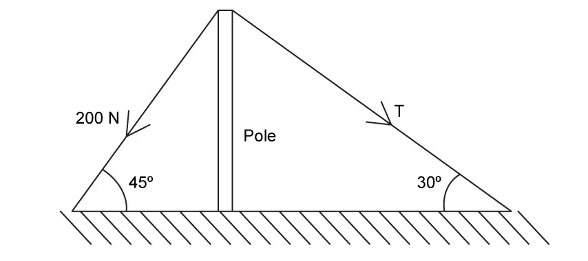
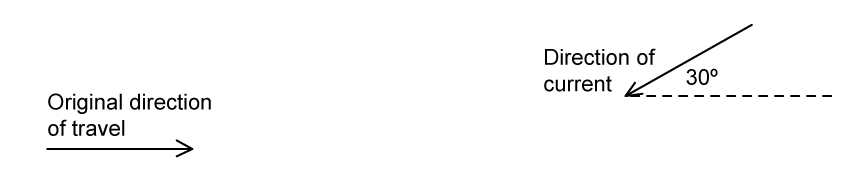
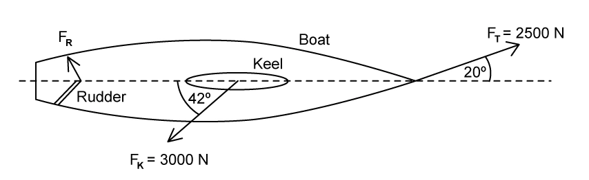
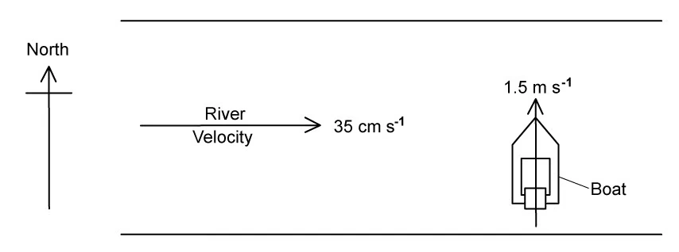

1 Physical quantities and units
1.1–1.4 · Quantities, units, uncertainties, scalars and vectors
Learning objectives
By the end of this chapter, you should be able to:
- state that every physical quantity consists of a numerical value and a unit;
- make sensible order-of-magnitude estimates for familiar physical quantities;
- recall the required SI base quantities and base units;
- derive the base units of force, energy, power, pressure, density and potential difference;
- use dimensional homogeneity to test whether an equation could be correct;
- convert accurately between SI prefixes, including squared and cubed units;
- distinguish random error, systematic error, accuracy, precision and resolution;
- express absolute, fractional and percentage uncertainties;
- combine uncertainties in sums, differences, products, quotients and powers;
- distinguish scalar and vector quantities and resolve coplanar vectors into components.
Chapter map
| Section | Main ideas | Typical examination task |
|---|---|---|
| 1.1 Physical quantities | values, units and estimates | choose a realistic order of magnitude |
| 1.2 SI units | base units, derived units and prefixes | reduce an unfamiliar unit to SI base units |
| 1.3 Errors and uncertainties | measurement quality and uncertainty propagation | quote a result with a justified uncertainty |
| 1.4 Scalars and vectors | direction, components and resultants | construct or calculate a vector resultant |
These ideas are used throughout the whole Physics course. Unit checks, sign conventions and uncertainty rules should become part of every calculation rather than being treated as isolated topics.
Reporting a physical measurement
A complete measured result should contain:
- a numerical value;
- an appropriate SI unit;
- a sensible number of significant figures;
- an uncertainty when the experiment or question requires one.
For example,
\[L=(12.6\pm0.1)\ \mathrm{cm}\]
states both the best estimate and the absolute uncertainty. The uncertainty is normally written to one significant figure, or two when its first digit is 1 or 2. The measured value is rounded to the same decimal place as the uncertainty.
Do not confuse decimal places with significant figures: \(0.00450\) has three significant figures but five decimal places.
Measurement strategy
Before collecting or processing data:
- choose an instrument whose range and resolution suit the quantity;
- check for zero error and calibration;
- avoid parallax by viewing a scale normally;
- repeat readings when random variation is expected;
- measure a large number of small repeated objects, then divide, when one object is too small to measure accurately;
- record raw readings before averaging so that spread and anomalous values remain visible.
An improved instrument can reduce uncertainty from limited resolution, but it cannot automatically remove poor technique, uncontrolled variables or systematic bias.
- Write the defining equation. 2. Convert every value to compatible units. 3. Substitute without premature rounding. 4. Check dimensions. 5. Round the final value appropriately. 6. Add the unit and uncertainty.
1.1 Physical quantities
数值和单位缺一不可
一个物理量必须同时说明数值大小和单位。例如：
- \(v = 3.0\ \mathrm{m\,s^{-1}}\) 表示速度；
- \(V = 3.0\ \mathrm{m^3}\) 表示体积；
- \(V = 3.0\ \mathrm{V}\) 表示电势差。
同一个字母可以代表不同物理量；单位给出物理意义的语境。因此答案中不能只写“3.0”，也不能把单位混入定义中的物理量名称。
合理估算：先判断数量级
估算题通常考查你是否能选对合适的数量级和单位，而不是精确常数。先把情境换成熟悉的参照物，再做一位有效数字的计算。
| Quantity | Useful estimate |
|---|---|
| 成人质量 | \(7\times10^1\ \mathrm{kg}\) |
| 汽车质量 | \(1\times10^3\ \mathrm{kg}\) |
| 一天的时间 | \(9\times10^4\ \mathrm{s}\) |
| 空气中的声速 | \(3\times10^2\ \mathrm{m\,s^{-1}}\) |
| 普通灯泡功率 | \(6\times10^1\ \mathrm{W}\) |
| 大气压 | \(1\times10^5\ \mathrm{Pa}\) |
| 绿光波长 | \(5\times10^{-7}\ \mathrm{m}\) |
| 原子直径 | \(1\times10^{-10}\ \mathrm{m}\) |
- 写出适用的关系式。2. 估算每一个量（带单位）。3. 用 SI 单位代入。4. 报告合理数量级，避免虚假的高精度。
Worked example: walking upstairs
估算质量为 \(70\ \mathrm{kg}\) 的人上升 \(3\ \mathrm{m}\) 所需的能量。取 \(g\approx10\ \mathrm{N\,kg^{-1}}\)：
\[ \Delta E_\mathrm{p}=mgh\approx 70\times10\times3 =2.1\times10^3\ \mathrm{J}. \]
这个答案写成 \(2\times10^3\ \mathrm{J}\) 同样合理；估算的重点是数量级。
1.2 SI units
考纲要求的五个 SI 基本量
Cambridge 9702 在本课程中要求熟练使用以下五个基本量。SI 系统完整地还有两个基本量，但本课程的指定列表就是下表五项。
| SI base quantity | SI base unit | Symbol |
|---|---|---|
| mass | kilogram | kg |
| length | metre | m |
| time | second | s |
| electric current | ampere | A |
| temperature | kelvin | K |
从定义式推出导出单位
不要死记所有单位。写出定义方程，再逐项换成基本单位即可。
| Quantity | Definition | SI base units |
|---|---|---|
| force, \(F\) | \(F=ma\) | \(\mathrm{kg\,m\,s^{-2}}\) |
| energy, \(E\) | \(E=\tfrac12mv^2\) | \(\mathrm{kg\,m^2\,s^{-2}}\) |
| power, \(P\) | \(P=E/t\) | \(\mathrm{kg\,m^2\,s^{-3}}\) |
| pressure, \(p\) | \(p=F/A\) | \(\mathrm{kg\,m^{-1}\,s^{-2}}\) |
| density, \(\rho\) | \(\rho=m/V\) | \(\mathrm{kg\,m^{-3}}\) |
| potential difference, \(V\) | \(V=E/Q\) and \(Q=It\) | \(\mathrm{kg\,m^2\,s^{-3}\,A^{-1}}\) |
For example: \(\mathrm{Pa=N\,m^{-2}=(kg\,m\,s^{-2})m^{-2}=kg\,m^{-1}\,s^{-2}}\).
Homogeneity of physical equations
一个正确的物理方程在等号两侧必须有相同的基本单位；这叫量纲齐次（homogeneous）。数值常数（如 \(\tfrac12\)）没有单位。
Example: check \(p=\rho gh\)
左侧压强：
\[[p]=\mathrm{Pa}=\mathrm{kg\,m^{-1}\,s^{-2}}.\]
右侧：
\[[\rho gh]=(\mathrm{kg\,m^{-3}})(\mathrm{m\,s^{-2}})(\mathrm{m}) =\mathrm{kg\,m^{-1}\,s^{-2}}.\]
两边相同，所以该方程的单位齐次。注意：齐次是方程成立的必要条件，但不证明方程一定正确。
SI prefixes
| Prefix | Symbol | Factor |
|---|---|---|
| tera | T | \(10^{12}\) |
| giga | G | \(10^9\) |
| mega | M | \(10^6\) |
| kilo | k | \(10^3\) |
| deci | d | \(10^{-1}\) |
| centi | c | \(10^{-2}\) |
| milli | m | \(10^{-3}\) |
| micro | \(\mu\) | \(10^{-6}\) |
| nano | n | \(10^{-9}\) |
| pico | p | \(10^{-12}\) |
- 前缀大小写有意义：\(\,\mathrm{m}\) 是 milli，\(\,\mathrm{M}\) 是 mega；\(\,\mathrm{p}\) 是 pico。
- 平方和立方单位要对换算因子同样乘方：\(1\ \mathrm{cm^3}=10^{-6}\ \mathrm{m^3}\)，不是 \(10^{-2}\ \mathrm{m^3}\)。
- 先转换前缀，再按题目要求处理标准形式和有效数字。
1.3 Errors and uncertainties
Error types, accuracy and precision
| Term | Meaning | Main effect | How to reduce it |
|---|---|---|---|
| random error | Unpredictable variation between readings, for example due to judgement or changing conditions | Reduces precision; readings have a larger spread | Repeat readings and calculate a mean |
| systematic error | A consistent bias from a faulty instrument or method | Reduces accuracy; all readings are shifted in the same direction | Recalibrate, correct a zero error, or improve the method |
| zero error | An instrument reads non-zero when the true value is zero | A type of systematic error | Check before use and apply a correction |
- Accuracy: how close a measurement is to the true value.
- Precision: how close repeated readings are to one another. A single measurement cannot be described as precise.
- Resolution is the smallest change an instrument can show. High resolution does not by itself guarantee accuracy.
Expressing uncertainty
For a measurement written as \(x\pm\Delta x\):
\[ \text{fractional uncertainty}=\frac{\Delta x}{x},\qquad \text{percentage uncertainty}=\frac{\Delta x}{x}\times100\%. \]
Finding an absolute uncertainty
- Analogue scale reading: usually \(\pm\) half the smallest division.
- A measurement requiring two scale readings (for example a length from a ruler): at least \(\pm\) one smallest division in total.
- Digital display: usually \(\pm\) one in the last displayed digit, unless stated otherwise.
- Repeated readings: where appropriate, uncertainty \(=\) half the range.
Example: readings \(12.55\), \(12.45\) and \(12.51\ \mathrm{cm}\) give a mean of about \(12.50\ \mathrm{cm}\) and half-range uncertainty of \(\pm0.05\ \mathrm{cm}\).
Combining uncertainties
| Calculation | Rule |
|---|---|
| \(z=x+y\) or \(z=x-y\) | Add absolute uncertainties: \(\Delta z=\Delta x+\Delta y\) |
| \(z=xy\) or \(z=x/y\) | Add percentage (or fractional) uncertainties |
| \(z=x^n\) | Multiply the percentage (or fractional) uncertainty in \(x\) by \(n\) |
For multiplication/division, calculate the resulting percentage uncertainty first; convert it to an absolute uncertainty only if the final answer needs to be written as \(z\pm\Delta z\).
Worked examples
- \(d_1=55.0\pm0.5\ \mathrm{cm}\) and \(d_2=21.0\pm0.7\ \mathrm{cm}\):
\[d_1-d_2=34.0\pm(0.5+0.7)=34.0\pm1.2\ \mathrm{cm}.\]
- \(s=50.0\pm0.4\ \mathrm{m}\), \(t=5.00\pm0.05\ \mathrm{s}\) and \(v=s/t\):
\[\frac{\Delta v}{v}=\frac{0.4}{50.0}+\frac{0.05}{5.00}=0.018=1.8\%.\]
Since \(v=10.0\ \mathrm{m\,s^{-1}}\), \(\Delta v=0.018\times10.0=0.18\ \mathrm{m\,s^{-1}}\).
1.4 Scalars and vectors
Scalar or vector?
A scalar has magnitude only. A vector has magnitude and direction.
| Scalars | Vectors |
|---|---|
| distance, speed, mass, time, energy, power, volume, density, pressure, charge, temperature | displacement, velocity, acceleration, force, momentum |
The reliable test is not whether a quantity may be written with a plus or minus sign; vectors must obey vector addition and can be resolved into components. For example, electric current is treated as a scalar quantity in this course.
Adding and subtracting coplanar vectors
Triangle method
To add \(\mathbf{a}+\mathbf{b}\), draw \(\mathbf{b}\) from the head of \(\mathbf{a}\). The resultant goes from the tail of \(\mathbf{a}\) to the head of \(\mathbf{b}\).
To subtract, rewrite \(\mathbf{a}-\mathbf{b}\) as \(\mathbf{a}+(-\mathbf{b})\): reverse the direction of \(\mathbf{b}\) first, then add head-to-tail.
The parallelogram method gives the same resultant: draw both vectors tail-to-tail and use the diagonal from the common tail.
Components of a vector
For a vector \(F\) at an angle \(\theta\) above the positive horizontal:
\[F_x=F\cos\theta,\qquad F_y=F\sin\theta.\]
Choose signs from the direction. A component towards the left or downward is negative if right/up are defined as positive. If the angle is measured from the vertical, identify opposite and adjacent sides first rather than memorising a different rule.
For coplanar forces in equilibrium, the resultant force is zero. Draw the vectors head-to-tail: they form a closed vector triangle (or closed polygon for more forces).
专题真题
Multiple Choice
题干和选项保留英文原文。共 20 题：Easy 7、Medium 7、Hard 6。图像依赖而未能可靠独立提取的题目不列入本页。
Easy · 7 questions
Example 1 · 1.1 MC Easy Q1
Which of the following is an SI base unit?
Show explanation
Kelvin is an SI base unit.Example 2 · 1.1 MC Easy Q3
Five energies are listed below: \(5\ \mathrm{kJ}\), \(5\ \mathrm{mJ}\), \(5\ \mathrm{MJ}\) and \(5\ \mathrm{nJ}\). Starting with the smallest first, what is the order of increasing magnitude of these energies?
Show explanation
Use \(\mathrm{n}=10^{-9}\), \(\mathrm{m}=10^{-3}\), \(\mathrm{k}=10^3\) and \(\mathrm{M}=10^6\).Example 3 · 1.1 MC Easy Q4
What is a reasonable estimate of the average gravitational force acting on a fully grown woman standing on the Earth?
Show explanation
\(W=mg\approx65\times10=650\ \mathrm{N}\).Example 4 · 1.1 MC Easy Q6
Which pair contains one vector and one scalar quantity?
Show explanation
Force is a vector and kinetic energy is a scalar.Example 5 · 1.2 MC Easy Q1
The density of the material of a coil of thin wire is to be found. Which set of instruments could be used to do this most accurately?
Show explanation
Measure mass, wire diameter and wire length with the most suitable instruments.Example 6 · 1.2 MC Easy Q7
An experiment is done to measure the acceleration of free fall of a body from rest. Which measurements are needed?
Show explanation
For a body released from rest, \(h=\tfrac12gt^2\).Example 7 · 1.2 MC Easy Q8
A micrometer is used to measure the diameters of two cylinders: \(12.78\pm0.02\ \mathrm{mm}\) and \(16.24\pm0.03\ \mathrm{mm}\). The difference in the diameters is calculated. What is the uncertainty in this difference?
Show explanation
Add absolute uncertainties when subtracting values.Medium · 7 questions
Example 8 · 1.1 MC Medium Q1
The average kinetic energy \(E\) of a gas molecule is given by \(E=\frac32kT\), where \(T\) is the absolute temperature. What are the SI base units of \(k\)?
Show explanation
\(k=E/T\).Example 9 · 1.1 MC Medium Q2
The speed of an aeroplane in still air is \(200\ \mathrm{km\,h^{-1}}\). The wind blows from the west at \(85.0\ \mathrm{km\,h^{-1}}\). In which direction must the pilot steer the aeroplane in order to fly due north?
Show explanation
The plane must have a westward component equal to the eastward wind component.Example 10 · 1.1 MC Medium Q3
The units of all physical quantities can be expressed in terms of SI base units. Which pair contains quantities with the same base units?
Show explanation
Both pressure and Young modulus have unit \(\mathrm{Pa}\).Example 11 · 1.1 MC Medium Q6
What is the ratio \(\dfrac{10^{-3}\ \mathrm{THz}}{10^{3}\ \mathrm{kHz}}\)?
Show explanation
Convert both frequencies to hertz.Example 12 · 1.1 MC Medium Q7
Which of the following correctly expresses the volt in terms of SI base units?
Show explanation
\(V=E/Q\) and \(Q=It\).Example 13 · 1.1 MC Medium Q9
For which quantity is the magnitude a reasonable estimate?
Show explanation
Visible green light has wavelength of order \(10^{-7}\ \mathrm{m}\).Example 14 · 1.1 MC Medium Q10
The equation relating pressure and density is \(P=\rho gh\). How can both sides of this equation be written in terms of base units?
Show explanation
Pressure is \(\mathrm{kg\,m^{-1}\,s^{-2}}\).Hard · 6 questions
Example 15 · 1.1 MC Hard Q2
Which estimate is realistic?
Show explanation
A car tyre contains a few tens of litres of air.Example 16 · 1.1 MC Hard Q3
The frictional force \(F\) on a sphere falling through a fluid is given by \(F=6\pi a\eta v\), where \(a\) is the radius of the sphere, \(\eta\) is a constant relating to the fluid and \(v\) is the velocity of the sphere. What are the units of \(\eta\)?
Show explanation
\(\eta=F/(av)\).Example 17 · 1.1 MC Hard Q4
When a constant braking force is applied to a vehicle moving at speed \(v\), the distance \(d\) moved by the vehicle as it comes to rest is given by \(d=kv^2\). When \(d\) is measured in metres and \(v\) is measured in metres per second, the constant has a value \(k_1\). What is the value of the constant when distance is measured in metres and speed is measured in kilometres per hour?
Show explanation
\(1\ \mathrm{km\,h^{-1}}=1/3.6\ \mathrm{m\,s^{-1}}\).Example 18 · 1.1 MC Hard Q5
The drag coefficient \(C_d\) is a number with no units. It is given by \(C_d=\dfrac{2F}{\rho v^nA}\), where \(F\) is drag force, \(\rho\) is air density, \(A\) is cross-sectional area and \(v\) is speed. What is the value of \(n\)?
Show explanation
Set the base units on both sides equal.Example 19 · 1.1 MC Hard Q7
Which formula could be correct for the speed \(v\) of ocean waves in terms of the density \(\rho\) of sea-water, the acceleration of free fall \(g\), the height \(h\) of the wave and the wavelength \(\lambda\)?
Show explanation
Only \(g\lambda\) has units \(\mathrm{m^2\,s^{-2}}\).Example 20 · 1.2 MC Hard Q2
A student uses a digital ammeter to measure a current. The reading of the ammeter is found to fluctuate between \(1.98\ \mathrm{A}\) and \(2.02\ \mathrm{A}\). The manufacturer of the ammeter states that any reading has a systematic uncertainty of \(\pm1\%\).
Which value of current should be quoted by the student?
Show explanation
The random uncertainty is \(\pm0.02\ \mathrm{A}\) and the systematic uncertainty is \(\pm0.02\ \mathrm{A}\), giving \(\pm0.04\ \mathrm{A}\).Structured Questions
以下为 10 道完整结构题：Easy 4、Medium 3、Hard 3。题干保持原题的英文结构；仅 1.1 SQ Hard Q3 使用已从 PDF 独立提取并完成遮罩合成的原图。
Easy · 4 questions
Example 1 · SI base and derived units · 1.1 SQ Easy Q2
(a) Table 1.1 shows SI base quantities and their corresponding base unit.
| SI base quantity | SI base unit |
|---|---|
| mass | kilogram, kg |
| time | |
| length |
-
Complete the missing SI base units for time and length.
[2 marks] -
Add two other base quantities and their units.
[2 marks]
(b) Newton’s second law describes the relationship between force \(F\), mass \(m\) and acceleration \(a\): \(F=ma\). Use this to write \(1\ \mathrm{N}\) in SI base units. [2 marks]
(c) The kinetic energy equation describes the relationship between energy \(E\), mass \(m\) and velocity \(v\): \(E=\frac12mv^2\). Use it to write \(1\ \mathrm{J}\) in SI base units. [2 marks]
(d) Power \(P\) is energy transferred \(E\) per unit time \(t\). Deduce the SI base units for power. [2 marks]
Show mark scheme / model answer
(a)(i)
- Time: second, s.
[1] - Length: metre, m.
[1]
(a)(ii)
- Electric current: ampere, A.
[1] - Temperature: kelvin, K.
[1]
(b)
- Acceleration has units \(\mathrm{m\,s^{-2}}\).
[1] - From \(F=ma\), \(1\ \mathrm{N}=1\ \mathrm{kg\,m\,s^{-2}}\).
[1]
(c)
- Velocity squared has units \(\mathrm{m^2\,s^{-2}}\).
[1] - From \(E=\frac12mv^2\), \(1\ \mathrm{J}=1\ \mathrm{kg\,m^2\,s^{-2}}\).
[1]
(d)
- \(P=E/t\).
[1] - \([P]=\mathrm{kg\,m^2\,s^{-3}}\).
[1]
Example 2 · Units, prefixes and estimates · 1.1 SQ Easy Q3
(a) Draw a line from each quantity to its correct unit.
| Quantity | Unit |
|---|---|
| velocity | \(\mathrm{N\,m^{-2}}\), \(\mathrm{m\,s^{-1}}\), \(\mathrm{N\,m}\), \(\mathrm{kg\,m^{-3}}\) |
| work done | \(\mathrm{N\,m^{-2}}\), \(\mathrm{m\,s^{-1}}\), \(\mathrm{N\,m}\), \(\mathrm{kg\,m^{-3}}\) |
| stress | \(\mathrm{N\,m^{-2}}\), \(\mathrm{m\,s^{-1}}\), \(\mathrm{N\,m}\), \(\mathrm{kg\,m^{-3}}\) |
| density | \(\mathrm{N\,m^{-2}}\), \(\mathrm{m\,s^{-1}}\), \(\mathrm{N\,m}\), \(\mathrm{kg\,m^{-3}}\) |
[3 marks]
(b) Complete the missing prefixes and powers of ten in the following list: tera, \(10^9\), \(10^3\), centi, milli, micro, \(10^{-9}\), pico. [3 marks]
(c) Convert the following measurements into standard form and to the specified number of significant figures.
- \(0.71\ \mathrm{GJ}\) to 3 s.f.
- \(24.5\ \mathrm{kW}\) to 4 s.f.
- \(0.003823\ \mathrm{mm}\) to 1 s.f.
- \(644.9\ \mathrm{pN}\) to 2 s.f.
[4 marks]
(d) Estimate the orders of magnitude, with an appropriate SI unit and prefix, of: mass of a car; thickness of a sheet of paper; density of air at room temperature and pressure; time between two heart beats. [4 marks]
Show mark scheme / model answer
(a)
- Velocity: \(\mathrm{m\,s^{-1}}\).
[1] - Work done: \(\mathrm{N\,m}\); stress: \(\mathrm{N\,m^{-2}}\).
[1] - Density: \(\mathrm{kg\,m^{-3}}\).
[1]
(b)
- tera, T: \(10^{12}\); giga, G: \(10^9\); kilo, k: \(10^3\).
[1] - centi, c: \(10^{-2}\); milli, m: \(10^{-3}\); micro, \(\mu\): \(10^{-6}\).
[1] - nano, n: \(10^{-9}\); pico, p: \(10^{-12}\).
[1]
(c)
- \(0.71\ \mathrm{GJ}=7.10\times10^8\ \mathrm{J}\) (3 s.f.).
[1] - \(24.5\ \mathrm{kW}=2.450\times10^4\ \mathrm{W}\) (4 s.f.).
[1] - \(0.003823\ \mathrm{mm}=4\times10^{-6}\ \mathrm{m}\) (1 s.f.).
[1] - \(644.9\ \mathrm{pN}=6.4\times10^{-10}\ \mathrm{N}\) (2 s.f.).
[1]
(d)
- Mass of a car: about \(10^3\ \mathrm{kg}\).
[1] - Thickness of paper: about \(10^{-4}\ \mathrm{m}\) or \(0.1\ \mathrm{mm}\).
[1] - Density of air: about \(1\ \mathrm{kg\,m^{-3}}\).
[1] - Time between heart beats: about \(1\ \mathrm{s}\).
[1]
Example 3 · Random and systematic errors · 1.2 SQ Easy Q2
(a) Distinguish between random and systematic errors. [2 marks]
(b) From a set of metal discs, one has a mass of \(9.5\ \mathrm{g}\) and a thickness of approximately \(2\ \mathrm{mm}\). State the instrument that should be used to measure:
- the mass of one or more discs;
- the thickness of one disc;
- the thickness of a stack of 20 discs.
[3 marks]
(c) A student takes five repeat readings of the thickness of the disc. The readings are shown in Table 1.1.
| thickness / mm | 2.012 | 2.001 | 1.998 | 2.008 | 1.994 |
|---|
Using the readings in Table 1.1, calculate:
- the mean value of thickness;
- the range of the results;
- the uncertainty in the mean value of thickness.
[5 marks]
(d) State how the instrument used to measure thickness can: (i) reduce or avoid a systematic error; (ii) reduce random errors. [3 marks]
Show mark scheme / model answer
(a)
- Random errors vary unpredictably between repeated readings and cause scatter.
[1] - Systematic errors shift readings consistently in the same direction.
[1]
(b)
- Mass: top-pan or electronic balance.
[1] - Thickness of one disc: micrometer screw gauge.
[1] - Thickness of 20 discs: micrometer screw gauge, then divide by 20 if the mean disc thickness is required.
[1]
(c)(i)
- Mean \(=(2.012+2.001+1.998+2.008+1.994)/5=2.0026\ \mathrm{mm}\).
[2] - Mean \(=2.003\ \mathrm{mm}\).
[1]
(c)(ii)
- Range \(=2.012-1.994=0.018\ \mathrm{mm}\).
[1]
(c)(iii)
- Uncertainty \(=\) half-range \(=\pm0.009\ \mathrm{mm}\).
[1]
(d)
- Check for a zero error before measurement and apply a correction or recalibrate.
[1] - Measure at different positions/orientations.
[1] - Repeat readings and calculate a mean.
[1]
Example 4 · Pendulum uncertainty · 1.2 SQ Easy Q3
(a) A student uses a stopwatch to measure the time taken for one complete swing of a pendulum. They measure the time for 10 complete oscillations to be \(16.4\pm0.1\ \mathrm{s}\). Calculate:
- the mean value of the time taken for one complete swing;
- the absolute uncertainty in this mean value;
- the percentage uncertainty in this mean value.
[4 marks]
(b) The student is using the pendulum to determine a value for the acceleration of free fall \(g\). As well as the period \(T\) of oscillation, they also take measurements of the length \(L\) of the pendulum. The value obtained, with its uncertainty, is \(L=67\pm1\ \mathrm{cm}\). Calculate the percentage uncertainty in the measurement of the length \(L\). [2 marks]
(c) The relationship between \(T\), \(L\) and \(g\) is \(g=4\pi^2L/T^2\). Using your answers in (a) and (b), show that the percentage uncertainty in the value of \(g\) is \(2.7\%\). [2 marks]
(d) There are some occasions where the resolution of an instrument is not the only limiting factor of uncertainty in a measurement. State:
- the meaning of the resolution of an instrument;
- one limiting factor that affects the uncertainty in the measurement of time using a stopwatch.
[2 marks]
Show mark scheme / model answer
(a)(i)
- \(T=16.4/10=1.64\ \mathrm{s}\).
[1]
(a)(ii)
- Absolute uncertainty \(=0.1/10=\pm0.01\ \mathrm{s}\).
[1]
(a)(iii)
- Percentage uncertainty \(=(0.01/1.64)\times100\%=0.61\%\approx0.6\%\).
[2]
(b)
- Percentage uncertainty in \(L=(1/67)\times100\%=1.49\%\approx1.5\%\).
[2]
(c)
- Since \(g=4\pi^2L/T^2\), percentage uncertainty in \(g\) is \(\%\Delta L+2\%\Delta T\).
[1] - \(1.5+2(0.6)=2.7\%\).
[1]
(d)
- Resolution is the smallest change in a quantity that an instrument can detect or display.
[1] - A valid additional limitation is human reaction time when starting/stopping the stopwatch.
[1]
Medium · 3 questions
Example 5 · Definitions and dimensional analysis · 1.1 SQ Medium Q1
(a) Define each quantity and state its SI base units: (i) velocity, (ii) acceleration, (iii) density. [6 marks]
(b) The pressure \(P\) due to a liquid of density \(\rho\) at depth \(h\) is \(P=\rho gh\), where \(g\) is acceleration of free fall. Determine the derived units of \(P\). [2 marks]
(c) The speed \(v\) of a sound wave through a gas of pressure \(P\) and density \(\rho\) is \(v=\sqrt{\gamma P/\rho}\), where \(\gamma\) is a constant. Show that \(\gamma\) has no unit. [3 marks]
Show mark scheme / model answer
(a)(i)
- Velocity is the rate of change of displacement.
[1] - Base units: \(\mathrm{m\,s^{-1}}\).
[1]
(a)(ii)
- Acceleration is the rate of change of velocity.
[1] - Base units: \(\mathrm{m\,s^{-2}}\).
[1]
(a)(iii)
- Density is mass per unit volume.
[1] - Base units: \(\mathrm{kg\,m^{-3}}\).
[1]
(b)
- \([\rho gh]=(\mathrm{kg\,m^{-3}})(\mathrm{m\,s^{-2}})(\mathrm{m})\).
[1] - \([P]=\mathrm{kg\,m^{-1}\,s^{-2}}=\mathrm{Pa}\).
[1]
(c)
- \([P/\rho]=(\mathrm{kg\,m^{-1}\,s^{-2}})/(\mathrm{kg\,m^{-3}})=\mathrm{m^2\,s^{-2}}\).
[1] - Taking the square root gives \(\mathrm{m\,s^{-1}}\), the units of \(v\).
[1] - Therefore \(\gamma\) contributes no units and is dimensionless.
[1]
Example 6 · Estimation · 1.1 SQ Medium Q2
Estimate:
- the speed of an apple as it hits the ground after falling from a tree;
- the number of kilowatt-hours used by a light bulb switched on for a whole day;
- the density, in \(\mathrm{g\,cm^{-3}}\), of the head of an adult person;
- the number of people it would take to circle the Earth holding hands.
[12 marks]
Show mark scheme / model answer
(a) Apple falling from a tree
- Take a fall height of a few metres and use \(v\approx\sqrt{2gh}\).
[2] - A suitable estimate is about \(10\ \mathrm{m\,s^{-1}}\).
[1]
(b) Light bulb for one day
- Take a typical power of \(60\ \mathrm{W}=0.060\ \mathrm{kW}\).
[1] - Energy \(=0.060\times24=1.44\ \mathrm{kWh}\), so about \(1.4\ \mathrm{kWh}\).
[2]
(c) Density of an adult head
- The head is mostly water-like tissue.
[1] - A suitable estimate is about \(1\ \mathrm{g\,cm^{-3}}\).
[2]
(d) People around the Earth
- Earth’s circumference is about \(4\times10^7\ \mathrm{m}\).
[1] - Allow roughly \(2\ \mathrm{m}\) per person holding hands.
[1] - Number \(\approx(4\times10^7)/2=2\times10^7\) people.
[1]
Example 7 · Transverse wave measurement · 1.2 SQ Medium Q1
The speed \(v\) of a transverse wave on a uniform string is given by
\[v=\sqrt{\frac{Tl}{m}},\]
where \(T\) is the tension in the string, \(l\) is its length and \(m\) is its mass. An experiment is performed to determine the speed \(v\) of the wave. The measurements are shown in Table 1.1.
| quantity | measurement | uncertainty |
|---|---|---|
| \(T\) | \(1.8\ \mathrm{N}\) | \(\pm5\%\) |
| \(l\) | \(126\ \mathrm{cm}\) | \(\pm1\%\) |
| \(m\) | \(5.1\ \mathrm{g}\) | \(\pm2\%\) |
(a) Use the data in Table 1.1 to calculate the speed \(v\). [2 marks] (b) Use your answer in (a) and the data in Table 1.1 to calculate the absolute uncertainty in the value of \(v\). [2 marks]
Show mark scheme / model answer
(a)
- Convert \(l=1.26\ \mathrm{m}\) and \(m=5.1\times10^{-3}\ \mathrm{kg}\).
[1] - \(v=\sqrt{(1.8)(1.26)/(5.1\times10^{-3})}=21\ \mathrm{m\,s^{-1}}\) (2 s.f.).
[1]
(b)
- Since \(v=(Tl/m)^{1/2}\), percentage uncertainty \(=\frac12(5+1+2)\%=4\%\).
[1] - Absolute uncertainty \(=0.04(21)=0.84\ \mathrm{m\,s^{-1}}\approx\pm0.8\ \mathrm{m\,s^{-1}}\).
[1]
Hard · 3 questions
Example 8 · Conversions, homogeneity and orders of magnitude · 1.1 SQ Hard Q1
(a) Convert:
- \(42\ \mathrm{km^3}\) into \(\mathrm{mm^3}\);
- \(25\) light-years into nm;
- \(0.05\ \mathrm{kWh}\) into PeV.
[8 marks]
(b) The frequency \(f\) of a stationary wave on a string is related to the tension \(T\), mass per unit length \(m\) and string length \(L\) by
\[f^k=\frac{T}{4mL^2}.\]
By considering the homogeneity of the equation, determine the value of \(k\). [3 marks]
(c) A diode has current \(I=I_0e^{qV/nT}\), where \(I_0\) is initial current, \(q\) is electron charge, \(V\) potential difference, \(T\) temperature and \(n\) is a constant.
- Determine the units of \(n\).
- Use the datasheet to name this constant.
[4 marks]
(d) Complete the SI base units and estimate the order of magnitude for: acceleration of free fall \(g\); Stefan-Boltzmann constant \(\sigma\); speed of a \(\beta\) particle; specific heat capacity of water \(c\). [4 marks]
Show mark scheme / model answer
(a)(i)
- \(1\ \mathrm{km}=10^6\ \mathrm{mm}\), so \(1\ \mathrm{km^3}=10^{18}\ \mathrm{mm^3}\).
[1] - \(42\ \mathrm{km^3}=4.2\times10^{19}\ \mathrm{mm^3}\).
[1]
(a)(ii)
- \(1\ \mathrm{ly}=c(1\ \mathrm{year})\approx9.46\times10^{15}\ \mathrm{m}\).
[2] - \(25\ \mathrm{ly}\approx2.4\times10^{26}\ \mathrm{nm}\).
[1]
(a)(iii)
- \(0.05\ \mathrm{kWh}=0.05(1000)(3600)=1.8\times10^5\ \mathrm{J}\).
[1] - This is \(1.125\times10^{24}\ \mathrm{eV}\).
[1] - \(0.05\ \mathrm{kWh}\approx1.1\times10^9\ \mathrm{PeV}\).
[1]
(b)
- The right-hand side has units \(\mathrm{N}/[(\mathrm{kg\,m^{-1}})\mathrm{m^2}]=\mathrm{s^{-2}}\).
[2] - Since \([f^k]=\mathrm{s^{-k}}\), homogeneity gives \(k=2\).
[1]
(c)(i)
- The exponent \(qV/(nT)\) must be dimensionless.
[1] - Since \(qV\) is energy, \([n]=\mathrm{J\,K^{-1}}=\mathrm{kg\,m^2\,s^{-2}\,K^{-1}}\).
[2]
(c)(ii)
- \(n\) is the Boltzmann constant.
[1]
(d)
- \(g\): \(\mathrm{m\,s^{-2}}\), order \(10^1\).
[1] - \(\sigma\): \(\mathrm{kg\,s^{-3}\,K^{-4}}\), order \(10^{-7}\).
[1] - \(\beta\)-particle speed: \(\mathrm{m\,s^{-1}}\), order \(10^8\).
[1] - Specific heat capacity of water: \(\mathrm{m^2\,s^{-2}\,K^{-1}}\), order \(10^3\).
[1]
Example 9 · Nuclear-scale estimates · 1.1 SQ Hard Q2
(a) Estimate the time taken for light to cross the nucleus of a hydrogen atom. [2 marks]
(b) A gold foil has thickness \(0.132\ \mathrm{\mu m}\) and a gold atom has radius \(146\ \mathrm{pm}\).
- Estimate, to the nearest hundred, the number of layers of atoms in the foil.
- A gold nucleus has radius about \(20\,000\) times smaller than its atomic radius. Estimate its cross-sectional area in barns, where \(1\ \mathrm{b}=100\ \mathrm{fm^2}\).
[6 marks]
(c) One atomic mass unit is \(1\ \mathrm{u}=931.5\ \mathrm{MeV}\,c^{-2}\). Show that \(1\ \mathrm{u}\) is approximately the mass of a proton in kg. [3 marks]
(d) An acre is approximately \(4050\ \mathrm{m^2}\), roughly the size of a football field. One astronomical unit is approximately \(150\) million km. Estimate the number of football fields that fit lengthways between Earth and the Sun. [3 marks]
Show mark scheme / model answer
(a)
- Take a nuclear diameter of order \(10^{-15}\ \mathrm{m}\) and \(c=3\times10^8\ \mathrm{m\,s^{-1}}\).
[1] - \(t=d/c\approx3\times10^{-24}\ \mathrm{s}\).
[1]
(b)(i)
- Gold atom diameter \(=2(146\ \mathrm{pm})=292\ \mathrm{pm}\).
[1] - Layers \(=(0.132\ \mu\mathrm{m})/(292\ \mathrm{pm})\approx452\), giving about 500 to the nearest hundred.
[2]
(b)(ii)
- Nuclear radius \(=146\ \mathrm{pm}/20\,000=7.3\ \mathrm{fm}\).
[1] - Area \(=\pi r^2\approx167\ \mathrm{fm^2}=1.7\ \mathrm{b}\).
[2]
(c)
- Convert \(931.5\ \mathrm{MeV}\) to joules.
[1] - Use \(E=mc^2\), so \(m=E/c^2\).
[1] - \(1\ \mathrm{u}\approx1.66\times10^{-27}\ \mathrm{kg}\), comparable to proton mass.
[1]
(d)
- Estimate a football-field length as \(\sqrt{4050}\approx64\ \mathrm{m}\).
[1] - Earth-Sun distance \(\approx1.5\times10^{11}\ \mathrm{m}\).
[1] - Number \(\approx(1.5\times10^{11})/64\approx2\times10^9\).
[1]
Example 10 · Scale diagrams and vector resultants · 1.1 SQ Hard Q3
(a) Two taut, light ropes keep a pole vertically upright by applying two tension forces, one of magnitude \(200\ \mathrm{N}\) and one of magnitude \(T\). By constructing a scale diagram, determine the weight of the pole \(W\) and the magnitude of \(T\). [4 marks]

(b) A canoeist can paddle at a speed of \(3.8\ \mathrm{m\,s^{-1}}\) in still water. The canoeist encounters an opposing current, moving at a speed of \(1.5\ \mathrm{m\,s^{-1}}\) at \(30^\circ\) to their original direction of travel. Using a scale diagram, determine the magnitude of the canoeist’s resultant velocity. [3 marks]

(c) The boat shown is being towed at a constant velocity by a towing rope, which exerts a tension force \(F_T=2500\ \mathrm{N}\). There are two resistive forces: the force of the water on the keel \(F_K=3000\ \mathrm{N}\) and the force of the water on the rudder \(F_R\). By scale diagram or otherwise, determine the magnitude of \(F_R\). [4 marks]

(d) Another boat wishes to cross a river. The river flows from west to east at a constant velocity of \(35\ \mathrm{cm\,s^{-1}}\) and the boat leaves the south bank, due north, at \(1.5\ \mathrm{m\,s^{-1}}\). Construct a scale diagram to show that the new direction of the boat is about \(13^\circ\) east of north. [4 marks]

Show mark scheme / model answer
(a)
- Draw the two tension vectors to scale in their stated directions and complete a closed force triangle.
[2] - Measure \(W\approx220\)-\(230\ \mathrm{N}\).
[1] - Measure \(T\approx160\)-\(170\ \mathrm{N}\).
[1]
(b)
- Draw the canoe velocity and opposing-current velocity head-to-tail to scale.
[2] - Resultant speed \(\approx2.5\)-\(2.7\ \mathrm{m\,s^{-1}}\).
[1]
(c)
- Constant velocity means the three forces form a closed vector triangle.
[1] - Resolve parallel and perpendicular components, or construct the triangle accurately.
[2] - \(F_R\approx1.1\)-\(1.25\ \mathrm{kN}\).
[1]
(d)
- Convert current speed: \(35\ \mathrm{cm\,s^{-1}}=0.35\ \mathrm{m\,s^{-1}}\).
[1] - Draw \(1.5\ \mathrm{m\,s^{-1}}\) north and \(0.35\ \mathrm{m\,s^{-1}}\) east to scale.
[2] - The resultant direction is about \(13^\circ\) east of north.
[1]
章末自检
不看笔记，能否完成以下事项？
- 写出五个指定 SI 基本量及单位；
- 从定义式推出 N、J、W、Pa、V；
- 分清 \(\mathrm{m}\) / \(\mathrm{M}\) 及 \(\mathrm{n}\) / \(\mathrm{p}\)；
- 用基本单位验证 \(p=\rho gh\)；
- 给出汽车质量、纸张厚度、空气密度、心跳周期的合理数量级。
原始专题 PDF
- 1.1 Physical Quantities - Units: MC Easy · MC Medium · MC Hard · SQ Easy · SQ Medium · SQ Hard
- 1.2 Measurements - Errors: MC Easy · MC Medium · MC Hard · SQ Easy · SQ Medium · SQ Hard
Content basis: Cambridge International AS & A Level Physics 9702 syllabus (2025–2027), section 1.1–1.2; local notes Note/1.1 Physical Quantities.pdf.pdf, Note/1.2 SI Units.pdf.pdf and Note/1.3 Errors - Uncertainties.pdf.pdf; local topical past-paper packs under PastPaper/Topical Past Papers/AS/1.1 Physical Quantities - Units and 1.2 Measurements - Errors.